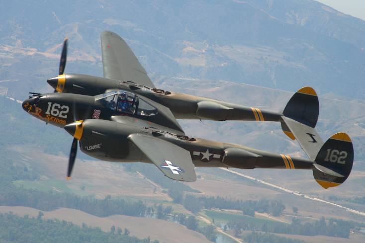
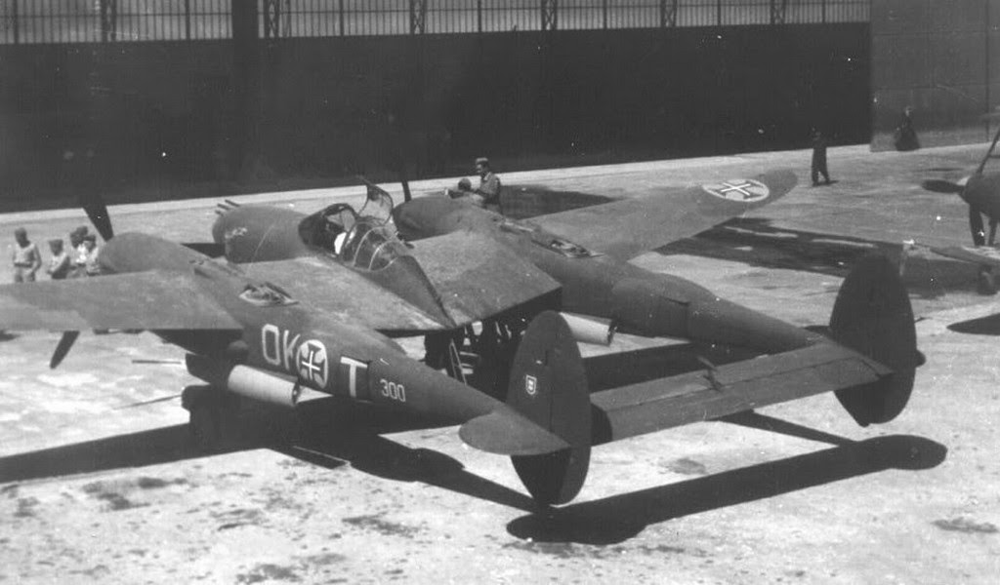
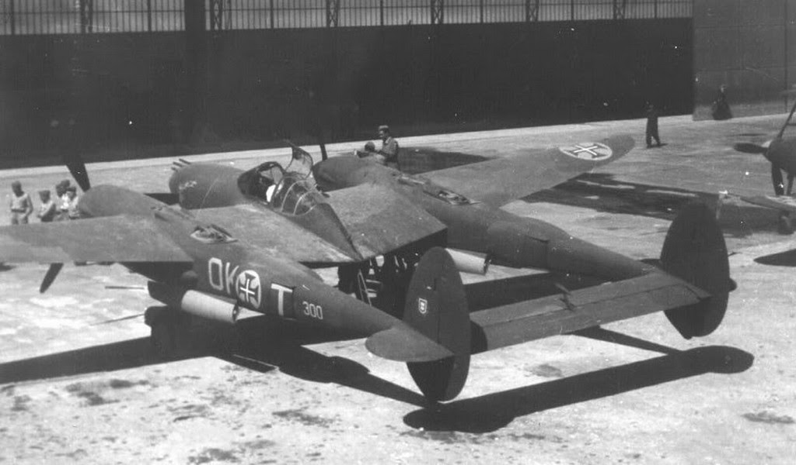

O Lockheed P-38 Lightning distinguiu-se entre os aviões de combate da Segunda Guerra Mundial, devido, principalmente, à sua versatilidade. Foi usado como caça de alta, média e baixa altitude, interceptor, escolta de longo alcance, bombardeiro ligeiro e de mergulho, caça noturno e avião de foto reconhecimento. Distintivo na aparência, o P-38 está entre os maiores e mais pesados aviões de combate da Segunda Guerra, e um dos mais rápidos e de maior teto de serviço. Operou durante a Segunda Guerra em quase todos os teatros de operações desde a Europa e Norte de África, ao Pacifico, demonstrando o seu elevado potencial. Durante o período de 1940 a 1945 foram produzidas um total de 9,923 aeronaves em cerca de 16 variantes e subvariantes.
| Ano | 1939 |
|---|---|
| Pais de Origem | EUA |
| Função | Caça |
| Tripulação | 1 |
| Motor | 2 × Allison V-1710-111/113 V-12 |
No final de 1930, com o recrudescimento dos regimes autoritários agressivos na Europa e na Ásia, os EUA, acompanhando os seus aliados europeus naturais, deram inicio a um processo de rearmamento. Uma das facetas desse processo foi o desenvolvimento de novos aviões de combate, tentando acompanhar aquilo que já se fazia na Europa, e o Lockheed P-38 Lightining foi um dos produtos desse esforço, que, embora a sua introdução ao serviço não tenha sido isenta de problemas, viria a ser um recurso importante para o esforço de guerra americano. Em 1937 a Lockheed juntamente com a Boeing, Consolidated, Curtiss, Douglas, e Vultee, foi convidada a apresentar uma propostas ao concurso X-608 da USAAC, para um intercetor de elevada altitude bimotor, capaz de atingir velocidades superiores a 580 Km/h a 6000 metros de altitude, 467 Km/h ao nível do mar, e capaz de descolar em pistas com cerca de 700 metros. A equipa de projeto da Lockheed, liderada por Hall L. Hibbard, onde participava Clarence L. "Kelly" Johnson, que viria a ser famoso por vários projetos futuros da Lockheed, estudou várias alternativas tendo-se decidido por um design arrojado e inovador para a época.
O projeto apresentava-se como um avião bimotor, de asa média trifuselado(*)
(twim boom), com lanças
no
prolongamento das nacelas dos motores ancoradas
nas asas, que terminavam numa empenagem com dois
estabilizadores verticais,
unido por um único estabilizador horizontal que se entendia para o
exterior
formando pequenas aletas. As asas de construção cantilever, e revestimento
totalmente metálico
ligavam-se a uma secção central com uma nacela principal
ao centro, e as duas nacelas do motores nos
topos, prolongando-se para os exterior
para formar as asas externas.
XP-38 Prótotipo (9623L)
O cockpit do piloto situava-se
na nacela principal que se expendia para a frente equidistante de
ambos
os motores,
dois Allison V-1710-11/15 de 12 cilindros cada um com um turbocompressor General
Electric
B-1 instalado a retaguarda no prolongamento da nacela. Para evitar o efeito
torque, as hélices do
motores giravam em sentidos opostos. O trem de aterragem era um
triciclo com as rodas principais a
serem
recolhidas nas nacelas dos motores e trem
frontal a recolher sob o nariz da nacela central.
À frente do piloto, na nacela principal, seria colocado o armamento principal, composto por um canhão de 20mm e quatro metralhadoras pesadas de 12,7mm (esta localização do armamento permitia que fosse usado a distâncias superiores uma vez que o angulo de convergência das armas deixava de ser um fator relevante). Em 23 de Junho de 1938, o projeto da Lockheed, designado internamente por Modelo 22 foi declarado vencedor, sendo contratada a construção de um protótipo a designar por XP-38. Lockheed XP-38 O XP-38, equipado com motores Allison V-1710 de 1000 cv, ficou concluído em dezembro de 1938, e depois de um primeiro acidento no solo por falha nos travões, realizou o primeiro voo em 27 de janeiro de 1939. Os primeiros testes de voo revelaram um conjunto de problemas que exigiram modificações ao protótipo, mas os testes posteriores foram bastante positivas com o XP-38 a atingir uma velocidade máxima de 660 Km/h e os 6000 metros de altitude em seis minutos e meio. XP-38 Após aterragem forçada perto do Aerodromo Michell Satisfeita com os resultados dos testes preliminares, antes da entrega do protótipo, a USAAC autorizou a realização de uma tentativa de bater o record de voo de costa a costa dos EUA, entre a Califórnia e Nova York. Porém na ultima etapa, ao fazer a aproximação ao aeródromo Michell em Nova York o XP-38 perdeu potência e o piloto foi obrigado a realizar uma aterragem de emergência num campo e golf. O piloto não ficou ferido mas o XP-38 ficou irrecuperável, tendo no entanto conseguido bater o record de velocidade ao realizar o voo em sete horas e dois minutos.

Ao contrário do que seria de esperar a perda do protótipo, não prejudicou o programa,
com a USAAC,
em
abril de 1939 a contratar a construção de 13 protótipos YP-38.
Porém a construção do YP-38 foi
seriamente atrasada, por um lado, devido à
necessidade de adequar a aeronave à produção em serie,
por
outro devido à expansão
das instalações da Lockheed (em Burbank), até aí uma pequena empresa civil,
que
necessitava agora de dar resposta a encomendas militares, que se previam, de grandes
dimensões.
Lockheed YP-38
O primeiro YP-38 apenas ficou concluído foi em
setembro de 1940, realizando o primeiro voo no dia 16
desse mesmo mês, porem a
entrega das 13 aeronaves prolongar-se-ia até junho de 1941. Os YP-38
diferia em
muitos detalhes do XP-38, muitos deles resultantes da adequação da aeronave ao
processo de produção
em
serie, e outros ajustes que incluíam a inversão da rotação
das hélices para o exterior que melhorou
a
estabilidade da aeronave como plataforma
de tiro.
YP-38 (2626L)
Logo desde início que foi detetado um grave problema no
YP-38. Em altas velocidades de mergulho
(acima
de Mach 0.68) a cauda vibrava
excessivamente, tornando difícil a saída do mergulho, podendo
inclusive
impedir a
aeronave de recuperar e, consequentemente, despenhar-se. Verificou-se
posteriormente
que o
fenómeno era resultado do fluxo turbulento sobre a cauda conhecido como compressão, resultado da
geometria da asa que a elevadas velocidades de mergulho criava regiões com ondas de choque que
ocasionavam o descolamento da camada limite de escoamento, em resultado do que a esteira de ar
turbulento proveniente da asa ao chegar aos estabilizadores deixava-os inoperantes, não permitindo saída
do mergulho.
A expectativa da USAAC, em relação à aeronave eram de tal forma elevadas que quase um ano antes da
entrega do primeiro YP-38, a 20 de Setembro, 1939, fez uma encomenda de 66 caças P-38.
De forma semelhante o Anglo-French Purchasing Committee, encomendou algum tempo depois, em março de 1940, um total de 667 P-38, com a designação de Modelo 322F (para os franceses) e Modelo 322B (para os britânicos), com algumas modificações relativamente ao modelo da USAF. P-38F Após a queda de França em junho de 1940 os britânicos ficaram com a parte francesa da encomenda ao mesmo tempo que apelidaram a aeronave de “Lightning”. Porém em junho de 1941, baseados nas experiencias da Batalha de Inglaterra, reconsideraram as especificações e alteraram a encomenda (143 aeronaves manteriam as especificações anteriores e as restante seriam atualizadas para o padrão americano a designar por “Lightning II”). Entretanto quando no final do verão o piloto de testes da RAF relata os problemas de compressão com a cauda do P-38 os britânicos cancelam a quase totalidade da encomenda, criando um problema negocial com a Lockheed, que só é resolvido quando os japoneses atacam Pearl Harbor e a USAAF assume as aeronaves destinadas originalmente à RAF. O único resultado relevante da falhada encomenda Franco-Inglesa foi o nome “Lightning” atribuído ao P-38, originalmente, o nome previsto pela Lockheed era “Atalanta”, mas foi abandonado em favor do nome atribuído originalmente pela RAF. Lockheed P-38 Lightning (series iniciais) A produção inicial de P-38 Lightnings, foi um lote inicial de 30 aeronaves (parte da encomenda inicial de 66) entregues a USAAF em meados de 1942. Nem todos estavam armados mas os que estavam dispunham de 4 metralhadoras Browning de 7,7 mm e um canhão Oldsmobile de 37mm. As restantes 36 aeronaves da encomenda inicial receberam vários aperfeiçoamentos em resultados das experiencias com os anteriores, incluindo, uma melhor blindagem, tanques de combustível auto-selantes, para os tornar aptos para combate (um deles, o XP-38A, foi equipado com um cockpit pressurizado experimental). Por alguma razão a USAAF designou estas aeronaves por P-38D, pelo que não existem designações de P-38B ou P-38C, facto que atesta a confusão existente na designação das series iniciais do P-38. P-38F transportado em dois anfibios DUKW Os P-38 foram revelando um conjunto de problemas, a serem resolvidos. A vibração da cauda foi resolvido com melhorias aerodinâmicas e adição de pequenos pesos no estabilizador horizontal. Outro problema bastante mais perigoso era a possibilidade da falha de um motor na descolagem que fazia com que a aeronave virasse ao contrário, eventualmente provocando a morte do piloto. Por isso os pilotos recebiam treino especial na descolagem dos P-38, o que criou alguma ma reputação da aeronave entre eles. O problema da compressibilidade foi de mais difícil resolução, a ponto de Kelly Johnson recordar mais tarde que ganhara várias ulceras a tentar resolver o problema, que era resultado do facto do P-38 operar em mergulho numa faixa de velocidade ainda desconhecida. Longos estudos e testes em túnel de vento realizados com a colaboração da NACA conseguiram encontrar a solução, instalando abas de mergulho junto ao motores. A correção do problema, foi no entanto tardia, apenas sendo incorporada a partir da produção final do P-38J e seguintes, razão pela qual foram produzidos kits de abas de mergulho necessários a modificação dos P-38 já em operação na Europa. Porém a sua instalação apenas começou a ser feita a partir de março de 1944, e foi limitada a 200 aeronaves.
A primeira serie de P-38, verdadeiramente apta para combate foi o P-38E, que começou a ser produzido a partir de outubro de 1941. Relativamente às aeronaves anteriores, apresentava varia melhorias importantes, nomeadamente a nível do painel de instrumentos e sistemas elétricos e hidráulicos, uma nova hélice em duralumínio Curtiss Electric, um radio SCR-274N, e aquela que seria a configuração definitiva do armamento, quatro metralhadoras Browning de 12,7 mm com 500 munições cada e um canhão Hispano de 20mm com 150 munições. Após 210 unidades P-38E produzidas, a partir de abril de 1942 a produção passou para o padrão P-38F, com novos motores Allison V-1710-49/53 de 1325cv cada, um rádio SCR-522 ou SCR-535, e suportes entre a raiz das asas e os motores para tanques de queda ou até 900 kg de bombas, do qual seriam construídas 527 aeronaves. Construíram-se também 99 aeronaves de reconhecimento fotográfico baseadas no P-38E e 20 no P-38F, designadas respectivamente por F-4 e F-4A, nos quais o armamento do nariz era totalmente removido e substituído por quatro camaras fotográficas. P-38H, AAF Tactical Center, 1944 No inicio de 1943, foi iniciada a produção do P-38G, com motores V-1710-51/55, que não ofereciam maior potência mas tinham algumas melhorias técnicas em relação aos anteriores. Eram semelhantes em todos os restantes aspetos ao P-38F, mas podiam transportar nos suportes de bombas tubos triplos tipo "bazooka" para lançamento de foguetes M-8. Foram produzidas 1082 unidades do P-38G, seguidos de 601 P-38H com motores V-1710-89/91 de 1425cv, uma capacidade de carga de bombas até 1450kg e um melhorado canhão de 20mm. Construíram-se também 180 Lightning de reconhecimento fotográfico F-5A (um deles, XF-5D, com um nariz transparente onde um segundo tripulante, de bruços operava manualmente uma câmara) com base no P-38G. Lockheed P-38J, P-38L (maturidade do Lightning) A maturidade do Lightning só seria no entanto atingida na versão seguinte, o P-38J, introduzido em agosto de 1943. P-38J O P-38J mantinha os motores V-1710-89 / 91 do seu antecessor, mas incluía um conjunto de substanciais melhorias, no seu sistema de arrefecimento que melhorou significativamente o seu desempenho e fiabilidade. O sistema permutador de calor (intercooler) que anteriormente estava alojado na parte interna das asas, onde era ineficaz e muito vulnerável foi completamente alterado e colocado nas nacelas do motores, que foram por isso redesenhadas para receberem o intercooler e os respetivos radiadores colocados por baixo dos motores formando uma espécie de “barba” distintiva relativamente às versões anteriores. O espaço deixado vago nas asas foi ocupado por novos tanques de combustível, que aumentaram ainda mais o seu já longo raio de combate.
Durante o período de produção do P-38J, saíram das linhas de montagem 2970 aeronaves que foram incluindo algumas melhorias subsequentes, incluindo um para-brisas com blindagem reforçada, e, finalmente a solução para os problemas de compressibilidade, com algumas modificações aerodinâmicas e com a instalação de pequenas abas de mergulho acionadas eletricamente para ajudar a aeronave a recuperar de um mergulho a alta velocidade. P-38L, na costa Belga perto de Ostend, maio, 1945 Seria no entanto a versão seguinte, o P-38L, disponível a partir de junho de 1944 a versão mais produzida com um total de 3923 unidades. A grande diferença relativamente ao P-38J eram os novos motores Allison V-1710-111/113 de 1600 cv, sendo também o primeiro Lightning armado com um suporte em cada asa externa para cinco foguetes de 127mm HVAR (high velocity aircraft rockets), mantendo a capacidade para 900 kg de bombas ou tanques de queda para um total de 1100 litros, nos suportes internos das asas (entre o cockpit e as nacelas dos motores). Algumas centenas de P-38J foram modificados pela Lockheed para versões desarmadas de foto reconhecimento F-5B, F-5C, F-5F, F-5E e F-5G e a após o final da guerra muitos P-38J e P-38L foram modificados para TP-38L com dois lugares para instrução. Lockheed P-38M e P-38J Droop Snoot Um total de 75 P-38L foram modificados para atuarem como caças noturnos (P-38M), pintados de preto, equipados com um radar AN/APS-6 num casulo por baixo do nariz, e um segundo cockpit em posição elevada atrás do do piloto. O P-38M era mais rápido do que o caça noturno construído para o efeito Northrop P-61 Black Widow, no entanto apesar de terem sido colocados no teatro de operações do Pacifico proximo do final da Guerra nunca chegaram a entrar em combate. P-38M Tal como outros caças da Segunda Guerra Mundial, o P-38 Lightning tornara-se um excelente caça bombardeiro, capaz de transportar duas bombas de 900 Kg, ao alcance do seu combustivel interno (cerca de metade da carga bélica dos primeiros B-17 e igual à do Mosquitio B Mk XVI). No entanto, enquanto os bombardeiros Mosquito dispunham de um bombardeador a operar uma mira nariz, os Lightning dispunham epenas de um puloto sem uma mira eficaz para bombardeio, o que limitava grandemente a precisão no bombadeamento. O P-38 Droop Snoot foi desenvolvido para atuar como um líder para as formações de bombardeiros convencionais de combate P-38J. A ideia original foi proposta por dois oficiais da 8ª Força Aérea (Cass Hough e Don Ostrander). A chave para o projeto Droop Snoot foi o novo nariz. As armas foram substituídas por uma posição para o Navegador/bombardeador e o nariz foisubstituido por um cone de Plexiglas transparente semelhante ao utilizado no Mosquito que continha uma mira de bombardeiro Norden, o controlo de libertação de bombas e equipamentos de navegação. P-38J Droop Snoot Não é totalmente claro quantos Snoot Droop foram produzidos mas vinte e três P-38J foram convertidos para o novo papel na Lockheed em Langford Lodge juntamente com a produção de cerca de cem kits de conversão, não sendo claro quantos foram utilizados. Os P-38J Droop Snoot entraram ao serviço ativo em 10 de Abril de 1944, quando um liderou um grupo de quarenta e dois P-38J do 20º Grupo de Caça contra a base da Luftwaffe em Gutersloh, na Alemanha. A partir daí passaram a operar a partir de bases na Grã-Bretanha e na Itália durante todo o resto da guerra (em outubro 1944 todos os três grupos de P-38 da 9ª Força Aérea estavam equipados para realizar missões Droop Snoot). Lockheed P-38 Lightning em operação O P-38 Lightning entrou em serviço em larga escala durante a campanha do Norte de África, em Novembro de 1942, onde os alemães o apelidaram de "Der Gabelschwanz Teufel" ("O diabo de cauda bifurcada").
Quando o Lightning iniciou as operações de combate em Inglaterra em Setembro de 1943, era, à data, o único caça com autonomia para escoltar os bombardeiros para a Alemanha. P-38 a ser municiado Depois de algumas incursões desastrosas em 1944 com B-17 escoltados por P-38 e Republic P-47 Thunderbolts, Jimmy Doolittle, então chefe da 8ª Força Aérea dos EUA, foi para o Royal Aircraft Establishment (RAE), em Farnborough, pedindo uma avaliação dos vários caças americanos. Dessa avaliação concluiu-se que o Messerschmitt Bf109 e o Focke-Wulf Fw 190 poderiam combater a velocidades de Mach de 0.75 e que o P-38 apenas o podia fazer a Mach 0.68 (ainda com os problemas de compressão por resolver) sendo por por isso quase inútil em missões de escolta sobre a Europa. Apesar dos americanos terem dificuldade em aceitar este juízo, fundamentalmente devido ao excelente desempenho do P-38 nas campanhas do Norte de África o veredicto foi claro - "o P-38 deveria ser retirado das missões de escolta". Após a avaliação em Farnborough, o P-38 foi mantido em serviço de combate na Europa por mais algum tempo. No entanto, mesmo que muitos dos problemas da aeronave tenham sido corrigidos com a introdução do P-38J, até Setembro de 1944, excetuando um, todos os restantes grupos de P-38 Lightning da 8ª Força Aérea haviam sido convertidos para o P-51 Mustang. A 8ª Força Aérea continuou a realizar missões de reconhecimento usando a variante F-5 de reconhecimento fotográfico do P-38. F-5C O P-38 foi usado mais amplamente e com sucesso no teatro do Pacífico, onde se revelou adequado para longas missões sobre a água por combinar um excelente desempenho, com um longo alcance e fiabilidades por dispor de dois motores. O P-38 foi utilizado numa variada gama de operações de combate mas muito especialmente escolta de bombardeiros a médias altitudes. No teatro do Pacifico o P-38 detêm o recorde de ter abatido mais aviões Japoneses, (mais de 1800), do que qualquer outro caça da USAAF. Foram inclusive os P-38 Lightnig do 339.º Esquadrão de Caças baseado em Henderson Field-Guadalcanal os escolhido para a “Operation Vengeance”, cujo objetivo era intercetar e abater a aeronave que transportava o Almirante Isoroku Yamamoto (Comandante em chefe da marinha japonesa e responsável pelos planos de ataque a Pearl Harbor) no dia 18 de abril de 1943, de manhã cedo, que seguia para uma visita de inspeção a várias bases nas Ilhas Salomão. O legado P-38J, 23 Skidoo - Planes of Fame - com a pintura do P-38 que abateu o Almirante Yamamoto No final de 1945, quando o último P-38 saiu da linha de produção 9.923 aeronaves haviam sido construídas e entregues à USAAF.No entanto com o final da Guerra o P-38 foi rapidamente declarado obsoleto em 1946, realizando o ultimo voo ao serviço da USAF em 1948. Atualmente existe um numero significativo de P-38 Lightning em exposição estática em museus por todo o mundo e alguns em condição de voo usados em demonstrações de Warbirds, alguns deles resultado de reconstruções a partir de destroços descobertos nos teatros de operações da Segunda Guerra Mundial.
 
